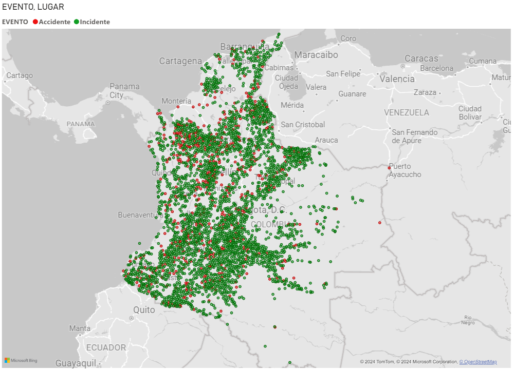

Introducción
Base de datos: Gov Datos Abiertos Eventos Minas Antipersonal en Colombia
Este proyecto se centró en la exploración de datos sobre minas en Colombia utilizando Excel como herramienta principal. El objetivo fue analizar diferentes aspectos relacionados con eventos de minas antipersonas, incluyendo la frecuencia y distribución de los tipos de eventos, su ocurrencia por departamento, y su evolución a lo largo del tiempo. Este análisis permitió obtener un pequeño vistazo sobre la situación armada en el país, identificando patrones y tendencias significativas en los datos recolectados.
En proceso (debajo hay un dashboard de excel toma algo de tiempo en cargar)
conclusiones:
